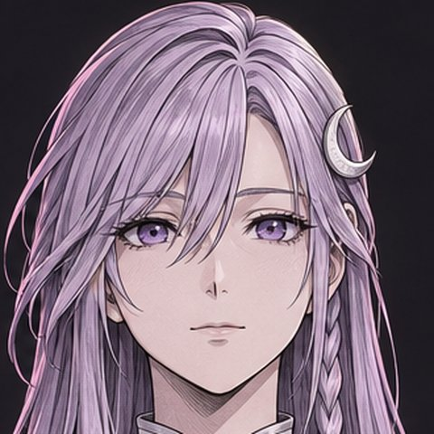
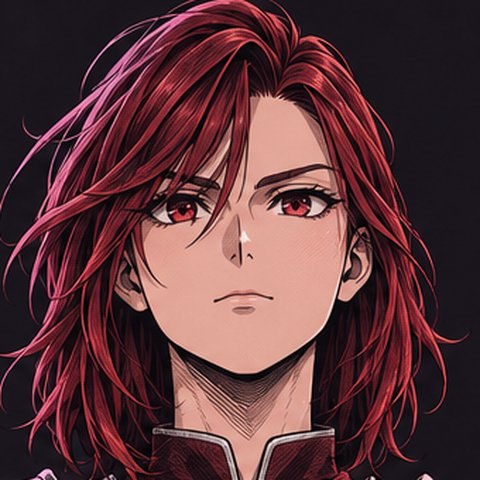

EcosdoLimiar
No continente de Varyn, uma fronteira invisível chamada Limiar separa o mundo humano do Abismo, um plano de sombra viva. A cada século, durante o Eclipse Rubro, o Limiar enfraquece. Neste ciclo ele escolheu uma Chave: alguém capaz de selar o Abismo para sempre, ou de abri-lo de vez.
Capítulo 1
3 episódios- Episódio 1 — O SonhoKael sonha com o Abismo, vive um dia comum em Vel Aren e, à noite, o Eclipse Rubro começa.10 páginas
- Episódio 2 — A MarcaOs Ecoantes invadem a praça, Kael protege Pip e a Marca do Limiar desperta em seu rosto.10 páginas
- Episódio 3 — O ConviteLyra chega, explica a Marca e convida Kael para a Torre do Véu. Bram revela parte do passado de Kael.10 páginas
Personagens principais
Ver todos Kael VarynAprendiz de ferreiro na Cidade Baixa, criado pelo mestre Bram. Impulsivo, teimoso, protege os mais fracos sem pensar. Há meses sonha com uma voz que chama seu nome.
Kael VarynAprendiz de ferreiro na Cidade Baixa, criado pelo mestre Bram. Impulsivo, teimoso, protege os mais fracos sem pensar. Há meses sonha com uma voz que chama seu nome.
Lyra SedrynMaga da Ordem do Véu, enviada para encontrar a Chave. Calma, estratégica, leal. Esconde que perdeu a irmã para o Abismo. Dorian VeltMelhor amigo e rival de Kael, filho de um mercador. Carismático, provocador, ótimo com duas adagas. Esconde o medo com piadas.
Dorian VeltMelhor amigo e rival de Kael, filho de um mercador. Carismático, provocador, ótimo com duas adagas. Esconde o medo com piadas.
Sienna RothA espadachim mais jovem da Guarda de Vel Aren. Determinada, espírito livre, coloca a justiça acima das ordens.